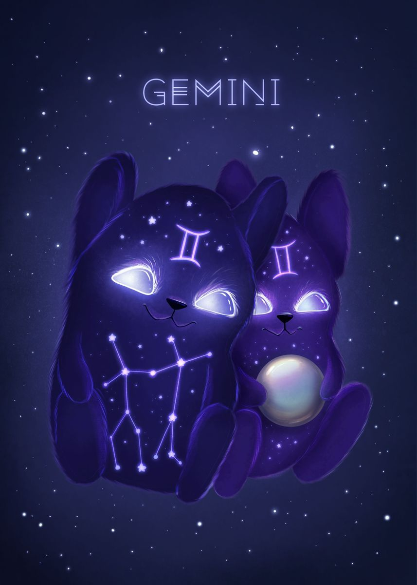

Gemini's Characteristics
Apakah tanggal lahirmu berada di rentang 21 Mei sampai 20 Juni? Jika iya, berarti kamu lahir di bawah naungan zodiak Gemini. Zodiak ini identik dengan simbol kembar dan elemen udara. Gemini memiliki sifat utama yang sangat khas. Mereka cenderung banyak bicara dan humoris sehingga pandai mengambil hati orang lain. Selain itu, orang yang lahir dengan zodiak Gemini adalah sosok yang cerdas dan memiliki sifat sosial yang cukup tinggi. Meski begitu, ada juga sisi negatif Gemini yang sulit disembunyikan, yakni nggak memiliki pendirian yang tetap. Karakter dan sifat zodiak Gemini inilah yang membuat mereka nggak bisa diberikan tanggung jawab besar.
